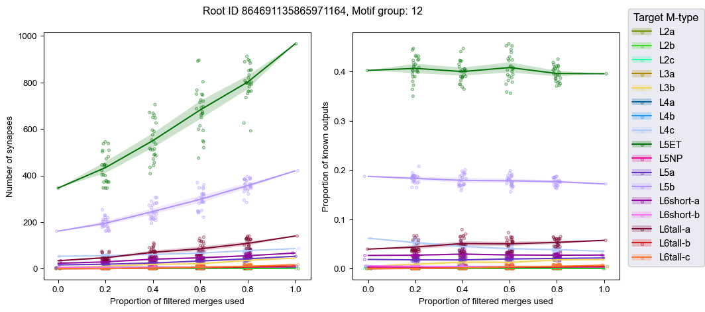
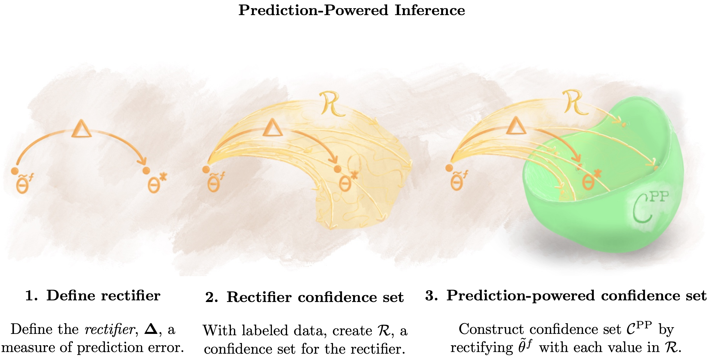

Proofreading retrospective#
Project ideas and discussion#
Ben Pedigo#
(he/him) Scientist I Allen Institute for Brain Science
 ben.pedigo@alleninstute.org
ben.pedigo@alleninstute.org
 @bdpedigo (Github)
@bdpedigo (Github)
 @bpedigod (Twitter)
@bpedigod (Twitter)
 bdpedigo.github.io
bdpedigo.github.io
Big picture#
We have a record of many edits, especially in Minnie
Opportunity to learn from these edits, see what they can teach us going forward
Still some work required in terms of code/tooling to do things like data augmentation, as well as science
< insert mind map here >#
Overview#
What I mean by each of these ideas
Approach
Brief proof-of-concepts
Interest / Significance / Feasibility
Sensitivity to proofreading: connectivity#
Understand {how, which} connectivity features change with proofreading (+ possibly other features, like distance)
How much proofreading needs to happen to be able to identify a cell as belonging to a particular connectivity class?
Motivate extending analyses to volumes which include unproofread material
Argue that particular features don’t change, or
Developing a convincing corrective models of the bias corrected by proofreading
Stable neuron#

Unstable neurons#

* super high variance comes from axon/soma merger, I think
Approach#
Examine affect of proofreading on connectivity estimands,
e.g. \(P(\text{type } i \rightarrow \text{type } j)\), \(P(\text{type } i \rightarrow \text{type } j) \circledast \text{compartment}\), etc.
Develop quantitative model of this relationship
e.g. predict # of missing synapses in original segmentation, using column as the training data
Apply model to unproofread data, assess variance in estimand, decide if proofreading is worthwhile
Prior work on quality-quantity tradeoff#
Would you rather have bit of highly-curated data, or lots of messy data?#

Depends on the question, but there exist theoretical cases where you want the latter
Would you rather have a bit of highly-curated data or lots of ~~messy~~ unproofread, biased data?#
Analogy to “prediction powered inference”#

Analogy from “prediction powered inference”#

Challenges#
Does not require running much classification code that hasn’t already been run, since just operating on the unproofread bulk of Minnie, say
Unsure what the feature set is as input for the model on proofreading errors
Resampling skeletons#
Understand {whether, how} skeleton features are affected by proofreading
Develop classifiers/clustering methods which are robust to such differences
Example frankeneurons#
Frankeneuron features#

Challenges#
Need to decide how to “play back” edits in a plausible way
E.g. make proximal edits more likely?
Running skeletonizaiton/featurization code on \(O(100,000)\) neurons \(\times\) \(O(1,000)\)
May be possible to run some code on the “final” skeleton, map those features (e.g. axon/dendrite labels) onto the rest
Open-ended in terms of the deliverable…
What models would we be interested in training with this kind of augmented data?
Machine-guided or hypothesis-driven proofreading#
Now that we have these connectome volumes, how should we spend our time?
Algorithm that eats a neuron and predicts completeness
Algorithm that eats a segmentation and predicts sites for edits
Better version: eats a segmentation and a statistic, predicts impactful edits
Approach#
Develop a local feature set, ideally reusing any relevant tested models
Features could involve anything in power set of {image, segmentation, skeleton, skeleton attributes}
Develop training set from available edits
Train black box model
Validate on held out neurons or subvolume
Deployment is a tricker question
Initial pass could just run predictions on a fixed materialization prior to a bout of proofreading
Challenges#
Not sure what the feature set is here
*”Neuron” could be anything in power set of {skeleton, compartment labels, synapse locations, connectivity profile, …}
Unclear if it’s possible to pluck out a random neuron and predict where its primary axon is, say
For instance, is it even possible to predict completeness from a cell you know nothing else about? What if you know something about its cell type, say from PSS features?
Dynamics: to be useful, would this be running on neurons all the time as they are edited, like the L2cache?
Overlap with other work on auto-proofreading?
Summary#